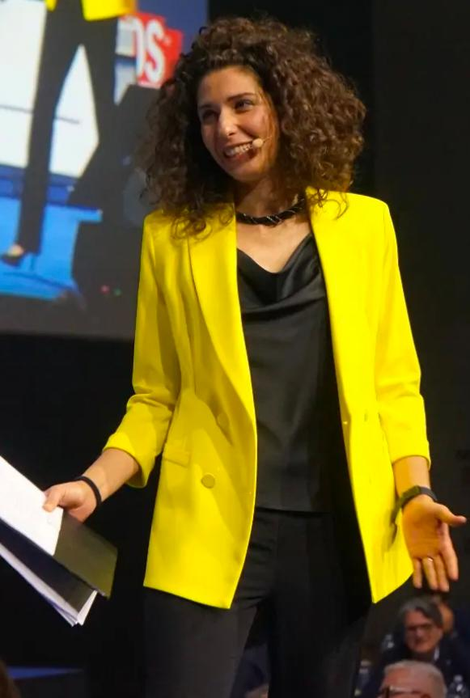

La vendita, per me, è sempre stata una questione di lettura. Lettura delle persone, delle dinamiche, dei silenzi.
Nel mio cammino professionale, ho attraversato contesti molto diversi — dall'arte, agli eventi fino al mondo delle PMI — portandomi dietro sempre la stessa filosofia: osservare, capire, collegare.
Ho coordinato una delle community di imprenditori più grandi d'Italia, OSA Community, incontrando decine di migliaia di persone in tutta Italia: dal Friuli al Veneto, dalla Toscana alla Sardegna, dal Lazio al Piemonte, fino alla Lombardia e oltre.
I miei interlocutori sono stati imprenditori molto diversi tra loro ma anche grandi professionisti e consulenti di alto profilo, attivi in settori che vanno dai servizi alla produzione.
Ognuno con la propria storia, il proprio coraggio, le proprie paure non dette.
Da lì ho imparato qualcosa che non si studia: la visione trasversale.
E, insieme a questa, la capacità di creare connessioni di valore: mettere in relazione persone, aziende e opportunità in modo naturale, leggendo ciò che può funzionare e quando.
Capire velocemente cosa sta succedendo dentro un'azienda.
Dove si blocca il
processo.
Dove si disperde valore.
E, spesso, cosa sta succedendo dentro chi quell'azienda la
guida.
Ho venduto in tutte le forme possibili: dal palco agli incontri diretti, passando per call e videocall, specializzandomi nel B2B.
Ogni contesto richiede leve diverse:
sul palco conta visione e
posizionamento,
nelle call devi costruire fiducia e gestire obiezioni,
negli incontri diretti devi
analizzare anche il non detto per arrivare alla chiusura.
Ho lavorato su ogni fase del processo, dalla lead generation alla chiusura e ho imparato che il metodo conta ma non basta. Conta ancora di più la capacità di adattarlo alla persona che hai davanti.
Lavoro con imprenditori, professionisti e aziende che hanno già un mercato, ma sentono che
qualcosa non sta funzionando come dovrebbe:
processi poco chiari, risultati discontinui, valore che non
si traduce in vendite.
Nel tempo è diventato chiaro un punto fermo:
non è quasi mai un problema di
idee.
È un problema di struttura, di direzione, di coerenza tra ciò che si è e ciò che si
comunica.
Per questo non mi interessa applicare schemi uguali per tutti.
Mi interessa capire
cosa c'è davvero e costruire da lì.
Una delle mie più grandi passioni è collezionare elefantini e non è un caso: in molte culture rappresentano memoria, intuito e forza gentile.
Quando inizi a cercarli con attenzione, ti accorgi che nessuno è uguale all'altro. Cambiano materiali, posture, dettagli. Alcuni sono imperfetti, altri quasi invisibili, eppure ognuno ha una presenza precisa.
Ho sempre trovato qualcosa di potente in questo: nel fatto che le differenze non siano un limite, ma esattamente il punto.
Le persone funzionano allo stesso modo.
E io ho costruito il mio lavoro partendo da
qui.
Sul palco ho moderato eventi corporate fino a 1.600 imprenditori e co-condotto grandi convention nazionali. Ho presentato e moderato due edizioni di OSA 360, con ospiti come Brunello Cucinelli, Urbano Cairo, Angelo Mastrolia e molti altri.
Oggi tengo speech sulla vendita, workshop pratici per team commerciali e sessioni formative in cui le persone non restano ad ascoltare, ma partecipano attivamente.
Perché la vendita non si impara solo capendola, si impara vivendola.

Certificata TAD (Tecnica Avanzata delle Domande) e specializzata nell'approccio NEPQ (Neuro-Emotional Persuasion Questioning).
15 anni nella vendita B2B · 8 anni di focus esclusivo sulle PMI · oltre 370 eventi live moderati · 10 regioni italiane presidiate.